The MoneyWorks Navigator window provides visual access to most of the functions within MoneyWorks, as well as “live” information such as overdue receivables and specific dashboard information. Because common workflows are presented in pictorial format, the Navigator is an ideal way for new users to find their way around the program. However it replicates the menu commands, and in general the more experienced user will find it faster to bypass the Navigator and use the menu commands with their associated keyboard short- cuts1.
The Navigator groups operations into functional areas in a graphical window. This window cannot be closed (but it can be resized). The functions available depend on which version you are using—MoneyWorks Cashbook for example will not have functions for invoices. The standard Navigator consists of three main sections, shown in the sidebar.
This section contains links to MoneyWorks help and documentation, and a visual guide to setting up your new MoneyWorks file.
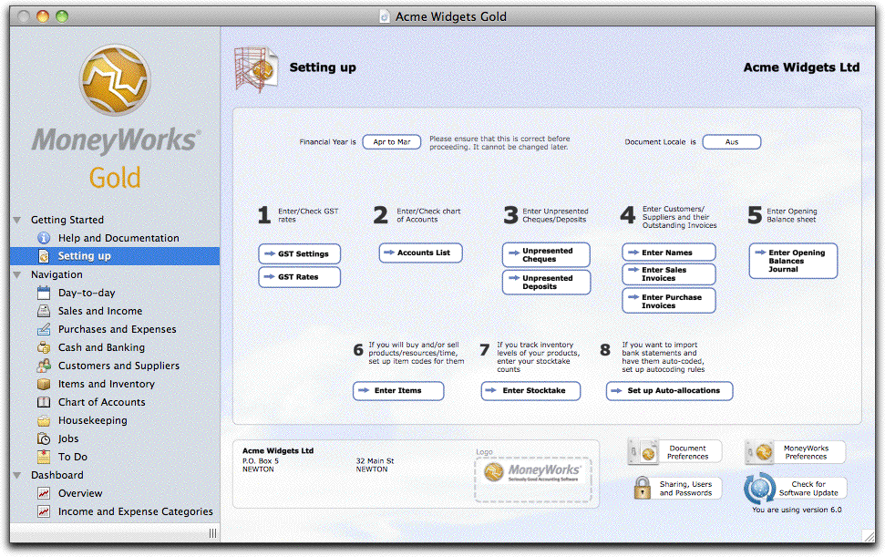
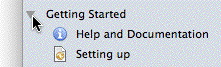
The Panel above is the “Setting Up” panel in MoneyWorks Gold, and provides a checklist of steps to follow when setting up a new file. This is shown when you create a new file.Tip: Once you have finished setting up, close the Getting Started section by clicking on the disclosure control to the left of the section name.
Note: Help and support information is also available under the Help menu at the top of the screen. This is somewhat more convenient as it can be accessed from almost anywhere in MoneyWorks without having to access the Navigator.
The Navigation section of the Navigator contains flowcharts of typical business workflows. There is a lot of redundancy in the design (i.e. functions may be repeated on more than one panel), making access easier.
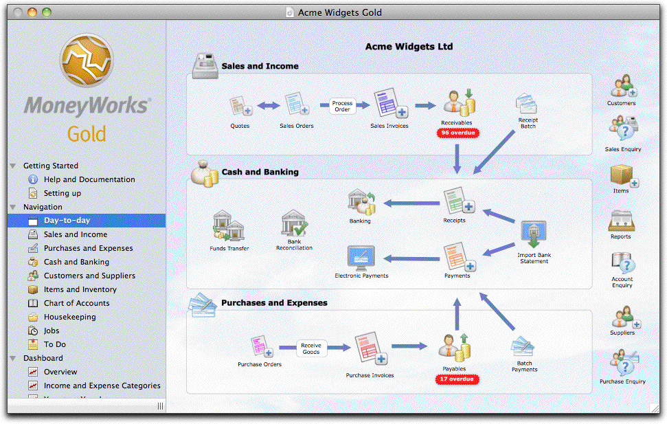
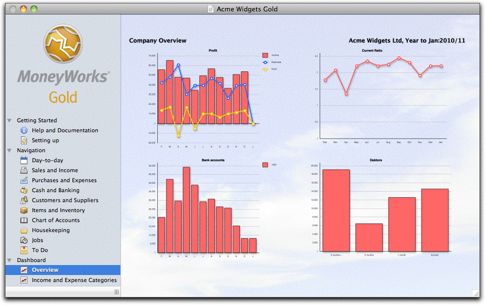
The panel above is the Day-to-Day panel in MoneyWorks Gold. This covers most of the core functions of a typical business, and is complemented by other more detailed panels, so (for example) a user who is solely concerned with payables will probably use the more specialised Purchases and Expenses panel.
Tip: You can configure the display on the Income and Expense dashboard by clicking on the company name. This will open a settings window where you can set the chart to be grouped by any of the account attributes (category, category2, type, currency etc) for any nominated period. This allows you to explore how your pattern of income and expenses have changed over time.
The Dashboard section contains summary (dashboard) information about your company. These panels are a realtime snapshot of your current position.
The Overview panel above is for the Acme Widgets Gold file. At a glance it can be seen that they are approaching an imminent cashflow crisis (the declining bank balance, bottom left), possibly caused by poor management of their Receivables (bottom right).
Ledger Chart: This is a column chart of your ledger balances up to the current period. The options are controlled by the pop-up menu settings:
Type: The type of accounts to display (e.g. Sales, Bank accounts). The two profit options will show the income and expenses, with a line for the difference (the profit). Filters you have added to the Edit option in the Select pop-up menu in the Account Enquiry window will also appear here as custom selections.
Period: The number of historic periods to display. Each period will be represented by a separate column.
Breakdown by: Use this to segment the columns in the chart for more granular information based on an account category, department etc.
Overlay: Set this to add an additional line to the chart to show averages or budgets.
Clicking on a column segment will drill down to the relevant transaction lines (MoneyWoks Gold only).
Sales Explorer: These two bar charts allow you to explore your customer and item sales over time. The left chart displays the item sales, and the right displays the customer sales. Clicking on a bar in either chart updates the other chart to show just those sales for the clicked item/customer (called "cross filtering"). The options are controlled by the pop-up menu settings:
Show: The data to display: Revenue, Cost, Margin, Quantity, Count (the number of transaction lines), % Margin. The margin is calculated as the average unit value of an inventoried item, or the buy price/standard cost for a non- inventoried items, at the time the transaction was posted.
For: The top (or bottom) number of items and customers to display.
For: The duration of the sales data (1 Month, Quarter, Year to Date etc).
To: The end period of the data to display.
Products broken down by: How to aggregate the product data (by Code, Category1, Category2, etc).
Customers broken down by: How to aggregate the customer data (by Code, Category1, Category2, etc).
Note: To prepare the data, MoneyWorks needs to analyse your sales data for both products and customers for the nominated time interval. For larger data files, or longer time intervals, the analysis might require a number of seconds.
Tips for Ledger Chart and Sales Explorer
You can force the charts to recalculate by right-clicking in the body of the chart and choosing Reload (Mac) or Refresh (Windows).
On Windows, you can print the chart by right-clicking in the body of the chart and choosing Print. You can also copy and share the chart.
The calendar panel provides a simple set of calendars for MoneyWorks users.
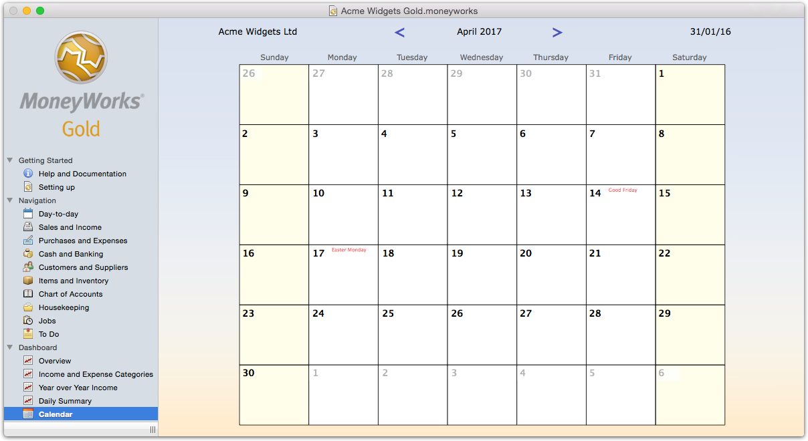
The calendar is stand-alone. It does not integrate with iCal, outlook or any other electronic almanac. This makes it very easy to use.
The calendar does not reflect any messages in the Reminder system, nor will it pop up alerts.
By default there is a company-wide calendar (available to all users), and a separate one for each user (only available to that user). Additional calendars can be created for company resources, such as meeting rooms, equipments etc.
Click on the cell corresponding to the event date (below the date)
The calendar entry window will open. Any existing events will be displayed.
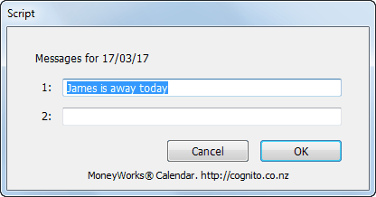
If you are adding a new event, enter it into the bottom field (a maximum of six entries can be made per day).
If you are modifying an event, make any changes to it
If you want to delete an event, delete all the text in the field.
Click OK
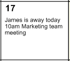
Events for the day
The changed event will be displayed on the calendar in the selected day.
Provided you have the privileges to do an Account Enquiry, you can label special days such as holidays. The appear next to the date in red:
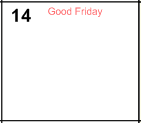
The Set Day Name window will be displayed.
A "named" day
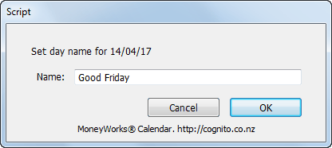
Note: This can only be done on the main Company calendar, and the named days will appear on all other calendars.
To change from the company to your personal calendar, click on the company name. Your name and initials will be displayed instead of the company name. To change back again, click on these.
If there are more than two calendars (see below), clicking on the company name will display a choices list of the available calendars. Select the calendar you want to use from this.
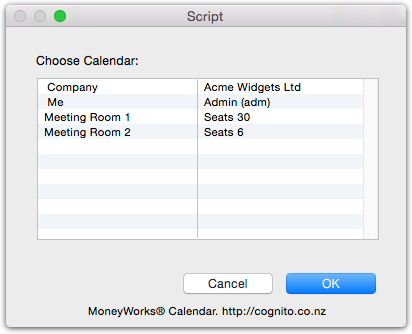
Additional calendars can be created using a special validation list called "Calendars". For example, the validation list settings below create two new calendars for meeting rooms.
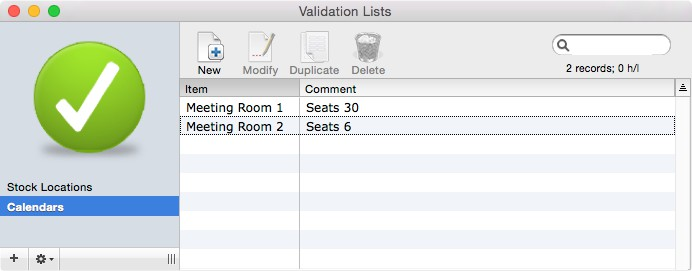
Accessing the Calendar through mwScript
As of MoneyWorks 9.1.7, it is possible for a script to access the contents of the calendar. For example, a scheduling script could check in a nominated calendar to see if it was a holiday, and not schedule deliveries for that day.
To access the calendar:
let entries = cal:getEntries(forDate, calendarName)
returns all entires for the specified calendar and date as newline delimited text.
For the main calendar, calendarName should be empty, i.e. ""
To get entries for all calendars, use "@" as the calendar name. The text returned will be tab delimited, with the calendar name in the first column and the entry in the second. The calendar name will be prepended with a "U" or a "C", depending on whether it is a user calendar of one created in the Calendars validation list.
Each section is divided into a number of panels.
Click on a panel in the sidebar to select it;
To move to the panel above or below, press the left or right arrow key respectively;
The panels in the Navigation section are numbered starting from 0. Pressing 0 will take you to the Day-to-Day panel, 1 to the one below that and so forth;
Click on the disclosure control preceding the section name to show/hide the topics in that section;
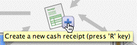
Click on an icon on panel to perform some operation—often this will take you to the relevant MoneyWorks list and a coach tip will appear to coach you on what to do next. Coach tips disappear as soon as you click anywhere or type anything—you do not need to click on the coach tip itself to dismiss it.Hold the mouse over an icon to see more information about that function. If there is a keyboard shortcut for the function that will also be displayed.
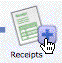
Tip: You can make the Navigator the front window from almost anywhere in Moneyworks by pressing Ctrl-0/⌘-0 (zero)Many Navigator icons/buttons give access to MoneyWorks Lists —see Working with Lists. Such icons are usually shown with a small blue + icon attached at the bottom, right corner:
To display the list, click the list icon itself
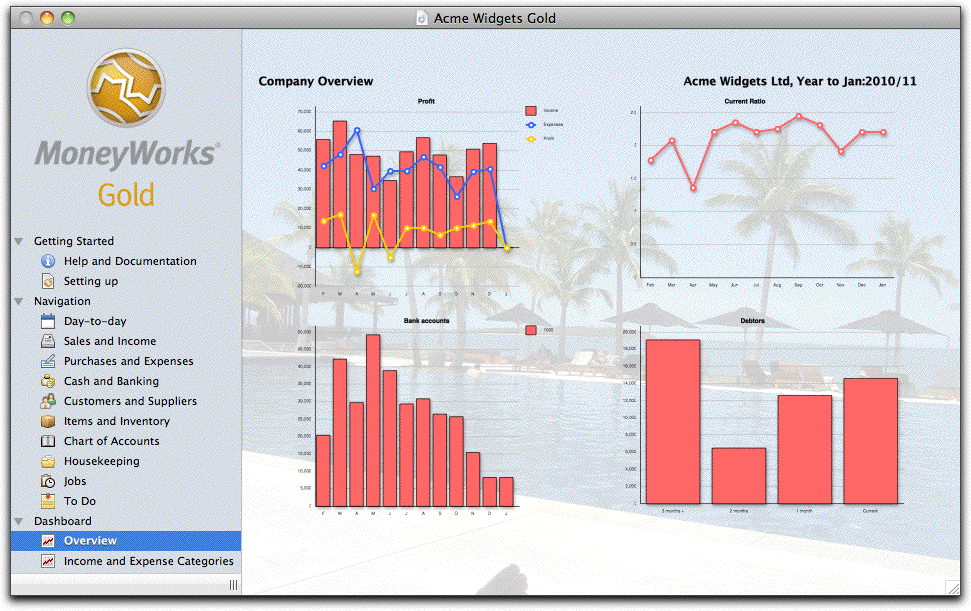
Improving the results with a tropical background.
1 Which is why this manual refers to list and menu commands, largely ignoring the
To add a new record to the list, click the associated blue + icon.
Click the blue + icon to add a record to the list
Navigator.↩︎
In MoneyWorks Gold, it is possible to customise the Navigator: remove unused panels; create new panels with your own workflow; create your own Dashboards, etc. To do this you need to first copy the Navigator folder from the Standard to the Custom plug-ins folder. Customisation is done using the MoneyWorks Forms Designer and (for dashboard graphs and reports), the MoneyWorks Report Writer. You can also change the cloud background image by replacing the background.jpg file in the Custom Plug-ins/Navigator/ Navigation folder.
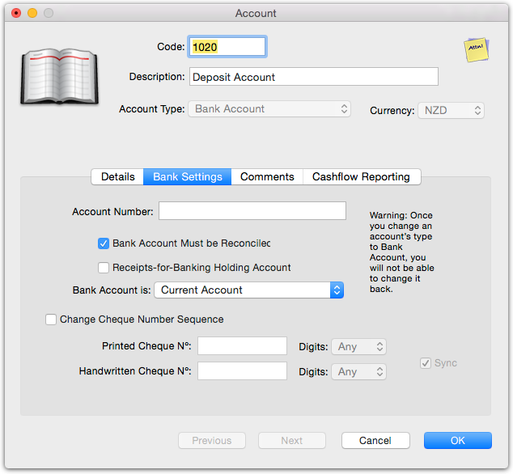
Entry Windows, Data Validation and Sticky NotesInformation is stored in the MoneyWorks database in records. The records can be viewed as lists— see Working with Lists, and can be searched and sorted in these lists.
Whenever you add or modify a record, the information will be displayed in some sort of entry screen. You will be able to enter data into certain parts of the screen, while other parts are for display only.
Entry windows are customised for different types of information. However many features are common to all windows.
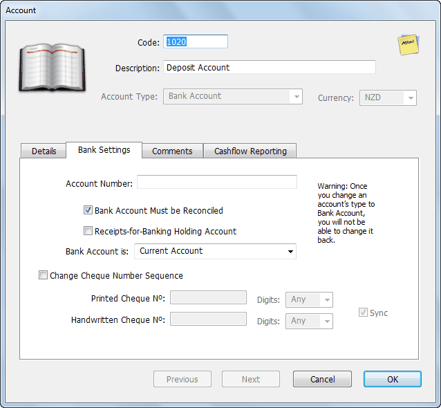
FieldMacintosh Entry Window
Windows Entry Window
A field is where information from the record is displayed or can be entered. Pressing the tab key will move you from one field to the next in the window. If you hold down the shift key and press tab, you will move to the previous field. You can also move directly to a field by clicking on it.
Certain fields have limits on the information that you can enter. For example, you can only enter a valid account code into a field that requires an account code. When you leave such a field (either by tabbing, clicking in another field or clicking a button), MoneyWorks checks on the information that you have entered. If this is found to be incorrect, an alert of some sort will be displayed—for fields requiring a code identifying another record (such as a Product code), this will be a choices list —see Entry and Validation where a Code is Required. You will not be able to leave a field if it contains invalid information.
Note: Most entry screens are non-modal (i.e. you can have more than one open at a time). However in Windows, if you maximise your windows, the entry screens will be modal.
Pop-up menu: Some values (such as colour) are set by means of a pop-up menu.
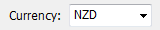
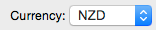
Pop-up menu or combo-box (Windows) Pop-up menu (Mac)
To set the value in a pop-up menu (also known as a “Combo Box” on Windows) either click or tab into the menu. To select the item you can:
click on the item
use the up and down arrow keys to select the item
type the first letter of the item
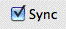
Check Boxes : These are used to represent options that are either on or off.When the check box is ticked the option is on. Clicking on the check box will change the value.
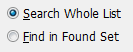
Radio Buttons: These are used to represent mutually exclusive options. When one is set, the others in the same group will be automatically reset.Acceptance Buttons: Use the acceptance buttons to accept/reject the information you have entered.
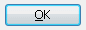
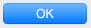
Windows OK button Mac OK button
The OK button will accept the information that you have entered or any modification that you have made. The entry window will be closed if this button is clicked.
The Cancel button will discard any changes that you have made in that particular entry window. If you have accessed another entry window through the current one, any changes that you made in that window will not be cancelled. The entry window will be closed if this button is clicked.
The Next button has the same effect as clicking OK, except that the entry window is not closed. If you are adding records, the entry window is cleared and kept open for the next record.
If you hold down the shift key while you push Next, the information in the entry screen is accepted but, apart from the code or reference number, the entry screen is not cleared. This is a fast way to enter a number of records that have several fields the same.
If you are modifying a group of records, pressing Next will save any changes made to the current record and move on to the next record.
The Previous
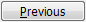
(or Prev) button is only available when modifying a selection of records. When pressed, it saves any changes made to the current record and moves back to display the previous record.Default Button: This is the button that will be actioned if you press the keypad- enter key. The default button is surrounded by a dark border on Windows and it is a solid blue on the Mac. Depending on the circumstances, it can sometimes be the OK button or the Next button.
Tabbed Views: Many entry windows have tabbed views, where clicking on a tab displays a different set of information. You can change the current tab to the one on the left or right by:
Pressing F5 or F6 on Windows
Pressing ⌘-← or ⌘-→ on Macintosh
Changing the Field Attributes: In the transaction and job sheet entry screens, you can change the attributes for some of the fields. The attributes are don’t tab into this field and use the last value entered into this field.
To change the attributes in the transaction entry window —see Changing Field Attributes.
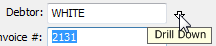
To change the attributes in the job sheet entry window —see Configuring the Job Sheet Entry Window.Where a field contains the identifier code for a record in another file, you can “drill down” and view the information in the record referred to by that code.
Fields in which this can be done have a small vertical “drill down” arrow associated with them. This is located either
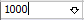
inside the field or just to the right of the field. Click the Drill Down
arrow to see the
When you are entering information into MoneyWorks you may not be able to remember what the code is for a customer, product, account or whatever.
MoneyWorks has two mechanisms to help you.
A drop down list appears under the entry field displaying the possible
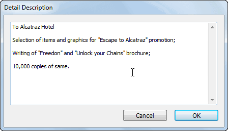
Clicking on this, pressing Ctrl-↓/⌘-↓ while inside the field, or choosing View Related Record from the Edit menu will drill down and open the associated record allowing you to view or change the information in it.associated record. The arrow can be in or to the right of the field.
candidates based on what you have thus far typed into the field. Candidates are selected if their code, or any word in the description/name, starts with whatever you have typed.
A Choices List is displayed of all candidates if you tab out of a field that requires a code, but in which no valid code has been entered.
There is a difference in how these work. The drop down list will only appear when the number of available candidates is manageable (less than 20), and will only show those candidates. The choices window will show all possible choices (subject only to the selected list filter), and attempt to match based on the first characters of the sorted column only. Unlike the drop down lists, the Choices list searches only on the code field.
Note: Codes whose first character is a tilde “~” are not displayed in the Choices or drop down lists—these are considered to be no longer in use.
Note: You can set up your own drop-down lists and choices lists for non-code fields by using Custom Validations.
The drill down arrow is also available in fields that can contain a large amount of text. When you click on one of these arrows (or press Ctrl-↓/⌘-↓) a window is opened that displays and allows you to edit all the text in the field.
Note: If you are drilling down into a name or item record while entering a transaction, you should always close the drill-down window by clicking the Cancel button. If you drill down and change any information, the pricing of the lines will be recalculated in case the discount, tax or pricing levels have changed.
When entering into a code field (such as an account code, product code, customer code etc), a drop down list of all items whose code starts with what you typed (or which have a word in their description that starts with what you have typed) will be displayed, provided there are no more than 20 possible matches.
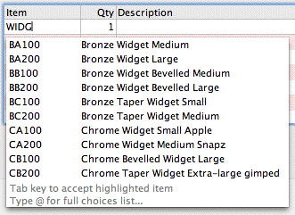
Drop down lists also apply to the Description field in transactions and detail lines—in this case the most recently entered 100 descriptions entered by the logged on user are available
Note: Drop down lists can be disabled in the MoneyWorks Preference settings
—see Show auto-fill dropdowns; you may want to do this if operating over a slow network.
When a drop down list appears, you can down arrow or double-click on the desired item. The code for this will be inserted into the field.
When you tab out of, or type an “@” into, a field that requires a code, a Choices Window will be displayed listing all valid codes for that field, subject to whatever filter is set for the list. You can select the code by double-clicking on it.
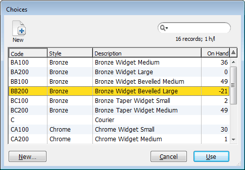
The Choices list is a normal MoneyWorks list, and can have its own filters and be sorted in the normal way by clicking on a column heading. You can also change the order of the columns and add and remove columns —see Customising Your List.The Choices List is automatically displayed whenever you leave a field:
into which you have entered an invalid code for an associated file
which requires a code but is empty
Examples are the debtor code field when creating a debtor invoice, the product and account code fields in a transaction detail line, and the account fields in the product entry window.
If you know part of the code you are entering, you can type that into the field and then press tab. The choices list will be displayed with a code that starts with the same characters highlighted, making finding your code easier. If you type in part of the code and terminate it with “@” (the wildcard character), the Choices list will only display candidate records that start with the code you typed in (if there is only one match, this will be inserted automatically into the field).
Tip When the choices list is displayed, the item in the list that best matches what you have already keyed in will be highlighted. The match is done against whatever column the choices list is sorted by. If you sort by (for example) the account description, you will be able to key in the name of the account instead of the code.
When the Choices List is displayed you can select your choice by:
Double-clicking it Use the scroll bar to move through the list to find the item that you want and double-click that item. The list is a standard MoneyWorks list, so you can sort it by clicking on the column headings, or using the left and right arrow keys.
Using the Keyboard Type directly into the list to have the list automatically position itself (e.g. if you know that the code starts with “SA”, type “SA” to reposition the list on a record starting with “SA”).The up arrow and down arrow keys will move you through the list a line at a time, the home and end keys will take you to the top and bottom of the list respectively, while the page up and page down keys will move you through the list a screen at a time. Once the record you want is highlighted, click the Use button or press the keypad-enter key.
If you click Cancel or press esc, no code will be entered into the field.
You search the list by clicking the Find toolbar button (or press Ctrl-F/⌘-F)—this brings up the standard Find window. Only the records that match Find request will be displayed in the list. Press Ctrl-J/⌘-J (Find All) to display all the candidate records.
The choices list for the Accounts file has two panels, the one on the left for the account itself and the one on the right for any departments within the account.
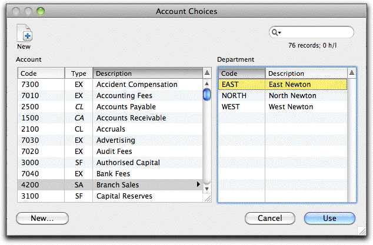
When a departmentalised account is selected in the left-hand list, the departments associated with the account are displayed in the right-hand list. Use the tab key to move the selection between the left and right lists, or simply double-click on the required department in the right-hand list.
Note: Accounts and Departments marked as Heading Only will be greyed out in the choices list and cannot be selected.
The job column field in transaction detail lines (if displayed) is optional. Tabbing through it will only bring up the choices list if the Job Code Required option is set for the associated general ledger code. If the option is not set, you can force the choices list to display by typing an “@”.
Sometimes when you are entering transactions you might find that the customer, supplier, product or account code that you need does not exist. In this situation you can easily create the item then and there.
To create an item “on the fly”:
The code that you enter should be one that does not already exist, so the choices list will be displayed. If the code you entered does already exist the details of the item will be displayed—you should shift-tab back into the field and enter a new code.
The entry screen for the item that you are creating will be displayed.
The new item will be created and the details will be displayed.If you Cancel out of the item window the item will not be created.
Often when entering information, you want to restrict the entry to a limited number of possibilities, or to ensure that it meets some particular criteria. The Custom Validations in MoneyWorks allow you to do this, either by specifying a list of acceptable values, or a formula that checks the validity of the entry.1
A validation list is basically a list of acceptable entries that can be made in a particular field. Thus if we want to tag transactions or customers by country, we first need to make a list of valid countries (the Validation List), and then associate this with whatever data entry field(s) we want the country to be entered in. When the user starts typing into the field, a drop-down list of valid matches is displayed. When the field is exited, its contents are checked against the item values in the validation list, and if no match is found a choices list is displayed.
A validation expression is a formula that is evaluated when the field is exited. If it evaluates to true, the entry is allowed. Otherwise a message is displayed and the field cannot be exited. An example would be where the text in the field must be exactly 4 characters long.
A new record cannot be saved until all the fields with custom validations have a valid entry. Note that:
Custom Validations are applicable only when entering information through the relevant entry screen. They do not apply for importing, replacing or other forms of data creation that bypass the user interface.
A Custom Validation applied to a field in a transaction entry window will only apply to that type of entry (e.g. Payment, Debtor Invoice). This allows you to have different validations for different types of transaction.
Custom Validations are stored by User, allowing you to have different validation lists for different users.
Note: Take care where assigning a custom validation to the transaction Salesperson field when you are also using the product Append Salesperson option. The validation list should only consist of a subset of the valid departments (otherwise it will be impossible to make a valid entry).
The validation lists can be created and maintained2 by choosing Show>Validation Lists. This window displays the Validation Lists down the sidebar on the left, and the contents of the selected list (which are themselves a list) in the body. The toolbar icons along the top of the window are to maintain the contents; use the icons at the bottom left to add and remove Validation Lists to the sidebar.
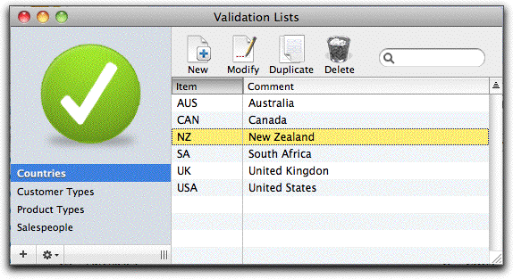
To create a new Validation List:
The List window will open
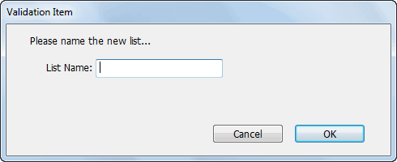
Highlight the list in the sidebar
Click the Cogs icon on the bottom left of the window and choose Delete List
The existing contents if any will be displayed in the body of the window
The List Item entry window will open
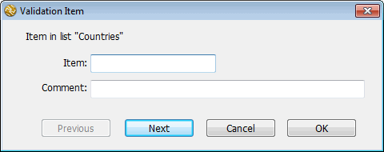
Enter the item code (up to 15 characters) to be used in the list, and a description
Click Next to add another List Item, or OK to finish.
Enter the name for the Validation List and click OK
When a Validation is associated with a data entry field, the corresponding record cannot be accepted unless the field is populated by data that conforms to the validation (i.e. is a member of the associated list, or matches the criterion specified by the formula). To assign a validation to a field:
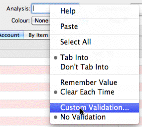
The Field Validation window will open showing your Custom Validation lists
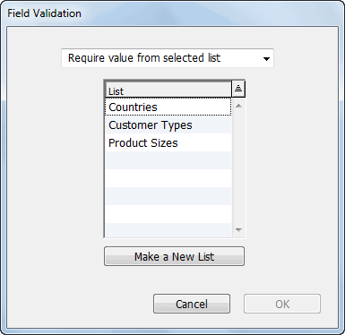
If you choose to make a list, you will be able to give the list a name and specify the values. You will need to subsequently edit the list to provide descriptions.
The list will be strictly enforced when associated with a new record; it will not be enforced if you are modifying an existing record, unless you explicitly modify the field associated with the list. Strict enforcement means that the value entered in the field must exactly match (except for case) an item in the list.
Note: Where a custom validation is longer than that permitted in a field, the validation will be truncated and accepted.
The List will be replaced by a text box
The variable _value in the expression will reference the text entered. If the formula evaluates to zero (false) the value will be rejected and a warning message displayed. Any other result will be accepted. For example
length(_Value) = 4
Will only accept an entry that is exactly four characters in length.
To include an optional message to display on non-acceptance, terminate the formula with a semi-colon and enter the message text after this. e.g.
length(_Value) = 4;Entry must be exactly four characters
If the formula is syntactically correct it will be saved. It can be edited subsequently by again right-clicking on the field and choosing Custom Validation
Because the lists are strictly enforced, to make one optional you simply need to have an entry in your validation list with an empty item field. It is a good idea though to put something in the description, so it is clear when choosing the item from the Choices window.
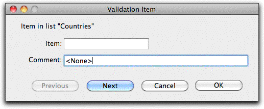
This will appear in the list as:
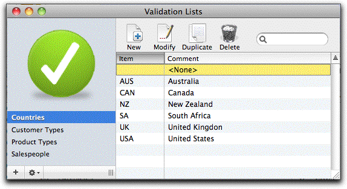
Note: the various types of transaction entry (Payment, Sales Order etc) can have different validation lists associated with the same field.